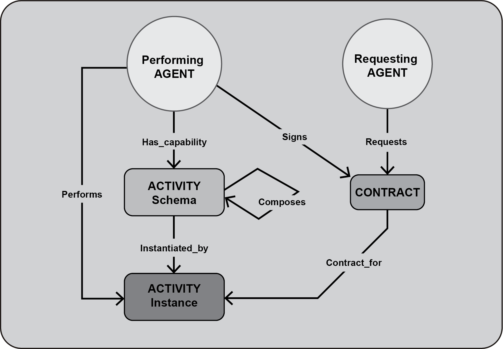
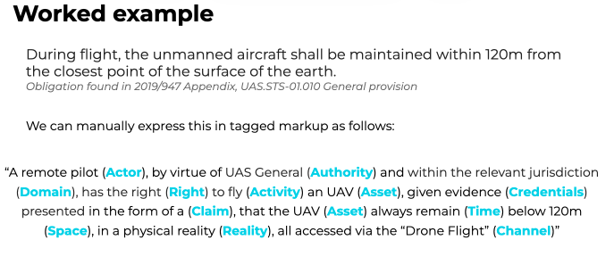
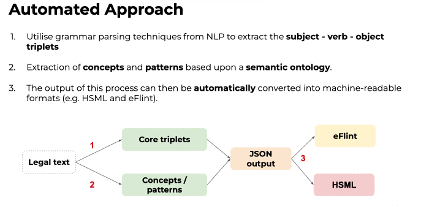

How the IEEE 2874-2025 CONTRACT entity forms the core of Spatial Web Governance for coordinating autonomous agents. The page also covers law as code, how it relates to normative languages such as eFLINT, and the implementations that put these ideas into practice.
Autonomy means self-governance. As AI systems gain autonomy, governance has to reach the systems themselves, not only the people who build and deploy them. The Dentons report, The Future of Global AI Governance, makes this case and points to socio-technical standards and law as code as the way forward.
The IEEE Spatial Web Protocol, Architecture, and Governance Standard (IEEE 2874-2025) provides that standard. In IEEE 2874, agents coordinate by forming contracts for activities. A requesting agent asks for an ACTIVITY to be performed, and a performing agent with the capability signs a CONTRACT to carry it out. IEEE 2874 states that “a contract shall be the mechanism used for connecting entities interacting on the Spatial Web” (6.3.6).
The Spatial Web Foundation’s HSML Implementation Specification encodes the CONTRACT as gov:Contract, the “universal trigger and single enforcement point” for every Activity. It binds deontic norms, authority-issued policies, and verifiable credentials into one auditable record.
Part 1 · The governance case
The Dentons report The Future of Global AI Governance (July 2023) combines legal analysis, AI research, and standards guidance. It presents the Spatial Web standards, then in development as IEEE P2874, as a response to a governance gap.
The Dentons report starts from the etymology of autonomy: auto (self) plus nomos (law or governance). Autonomy is therefore self-governance. As the report puts it, AI governance “must also be about governing the AI systems themselves, and the networks that connect them to the data and devices they operate on.”
In its section on the limitations of current proposed regulations, the Dentons report concludes that frameworks relying only on penalizing developers and operators will become inadequate. Its example is autonomous vehicles, which will make billions of decisions a day, beyond what humans can manage one decision at a time.
The report follows NIST in calling for socio-technical standards that combine technical, social, legal, and ethical requirements. At the center of these is HSML, a modeling language that grounds AI in the Who, What, When, Where, How, and Why of any situation. The report’s example is a hospital robot: an identified robot holds a credential, issued by Health and Human Services, granting it the right to perform a medical procedure within USC Medical Center.
“How do we govern AI systems that are on a path to becoming self-governing?”
— The Dentons report, The Future of Global AI Governance
| Dentons report core need | Where it lands in IEEE 2874 / HSML |
|---|---|
| Shared understanding of meaning and context between humans and AIs | HSML entity model (SPACE, AGENT, ACTIVITY, DOMAIN, CREDENTIAL, CONTRACT …) as a common grounded vocabulary |
| Explainability through explicit modeling of decision-making | ACTIVITY schemas with explicit initial and resulting conditions; contract evidence and audit trail |
| Interoperability across organizations, networks, and borders | HSML entities with Spatial Web IDs (W3C DIDs), registered in the Universal Domain Graph (UDG) |
| Compliance with diverse regulatory demands, cultural norms, and ethics | Domain Authorities, gov:Policy and gov:Norm, contract validation against Domain rules |
| Authentication and credentialing, with privacy and security by design | W3C Verifiable Credentials and CredentialProfiles, checked when a contract is validated |
Part 2 · Agent coordination
IEEE 2874 describes the Spatial Web as intelligent AGENTS with CREDENTIALS, performing ACTIVITIES discussed in CHANNELS, on and in DOMAINS represented in HYPERSPACES, fulfilling CONTRACTS with other AGENTS.

AGENT–CONTRACT–ACTIVITY relationships (IEEE 2874, Figure 24, clause 6.6.11). A requesting agent requests a contract. A performing agent with the capability for the activity schema signs it, then performs the activity instance the contract is for.
Part 3 · The CONTRACT entity
IEEE 2874 defines a CONTRACT as “a Spatial Web ENTITY that represents a request to perform an instance of an ACTIVITY” (6.6.5). The HSML Implementation Specification turns it into a machine-actionable class.
| Aspect | IEEE 2874 normative content |
|---|---|
| Definition | “A binding agreement between two parties, especially enforceable by law, or a similar internal agreement wholly within an organization” (adapted from IEEE Std 730-2014). |
| Relationships (6.6.5) | Requested by a DOMAIN or an AGENT; accepted (signed) by an AGENT; fulfilled by an AGENT; an agreement for the performance of an ACTIVITY; an agreement between two or more parties. |
| Attributes | All mandatory ENTITY fields; a parties field; a contract status of Requested | Executed | Fulfilled | Rescinded | Breached; a timestamp for each status change. |
| Decidable status (6.5.4.5) | “Contract status shall be a function of the status of the associated Activity instance, such that the contract conditions can be evaluated as True or False against the relevant Domain description(s).” |
| Automatic execution (6.5.4.5) | Domain architectures shall enable automatic execution of contracts when mutually agreed conditions are reached, as close to real time as possible, including at the network edge. |
| Economics (6.5.1.3) | “This standard does not require that a CONTRACT contain any particular economic terms.” |
SWF STD-2:2025 (v0.2.0) defines gov:Contract as “a binding agreement governing the execution of one or more act:Activity instances by specific agt:Agents within a core:Domain context.” Its design principle, Contracts as the Universal Trigger, states: “Execution of every act:Activity is mediated through a gov:Contract. The Contract acts as the universal trigger and single enforcement point.” Every contract carries a W3C DID-compliant Spatial Web ID. The specification lists its properties as follows (Table 87):
| Predicate | JSON-LD name | Description | Range | Cardinality | Requirement |
|---|---|---|---|---|---|
| gov:isRequestedBy | requestedBy | The core:Domain that initiated the contract. | core:Domain | 1..1 | Mandatory |
| gov:isAcceptedBy | acceptedBy | The agt:Agent(s) that accepted the contract. | agt:Agent | 1..* | Mandatory |
| gov:isFulfilledBy | fulfilledBy | The agt:Agent(s) responsible for fulfilling the contract. | agt:Agent | 1..* | Mandatory |
| gov:contractFor | contractFor | The act:Activity the contract governs. | act:Activity | 1..* | Mandatory |
| gov:contractStatus | contractStatus | The current lifecycle status: Requested, Executed, Fulfilled, Rescinded, or Breached. | xsd:string | 1..1 | Mandatory |
| gov:hasParticipation | hasParticipation | Links to detailed participation records. | core:Participation | 0..* | Optional |
One modality (Obligation, Prohibition, or Permission), applied to targets through executable conditions in SHACL, SPARQL ASK, JSON Schema, or CEL. May declare onViolation enforcement.
Package Norms with scope, validity window, precedence for conflict resolution, jurisdiction, and the credential profiles a contract must satisfy.
W3C Verifiable Credentials, checked when a contract is validated against CredentialProfiles covering issuer trust, subject binding, proof, and freshness.
Contract evaluation flow (HSML 9.1.7)
Part 4 · Law as code
The EU Flying Forward 2020 (FF2020) project, the case study in the Dentons report, built urban air mobility infrastructure on draft IEEE Spatial Web standards. It translated drone regulations into HSML so that autonomous drones could comply automatically.

Worked example. FF2020 took an obligation from the EU drone regulation and expressed it by hand in tagged markup, mapping each phrase of the legal text to an HSML element.

Automated approach. NLP grammar parsing extracts subject–verb–object triplets, a semantic ontology extracts concepts and patterns, and the JSON output is converted into HSML and eFLINT.
The Dentons report highlights two further results. First, encoding law exposes ambiguity. In “UA operators must fly safely,” what does “safely” mean? HSML can flag such clauses, creating “a virtuous two-way loop between analog law and digital law.” Second, conditional spatial rules can be encoded. For example, within 50 m horizontally of an artificial obstacle taller than 105 m, the maximum operating height may rise to 15 m above the obstacle (UAS.STS-02.010). FF2020 used an earlier HSML entity model than the 2025 standard.
“During flight, the unmanned aircraft shall be maintained within 120m from the closest point of the surface of the earth.”
EASA rule — IEEE 2874 law-as-code worked example (6.5.5.2)
IEEE 2874 (6.5.5.1) adopts the “rules-as-code” (MIT Computational Law) or “law-as-code” paradigm. The paradigm covers both translating existing law into executable code and designing new law for autonomous systems. Agents assent to governance by signing a contract to take part in the enforcement Activity. Domains govern by granting credentials only for Activity types consistent with Domain Authority rules. The EASA rule becomes a spatial predicate that can be checked against the domain model when the flight is executed.
IEEE 2874 (6.5.4.2) notes that HSML’s representation of Activities and norms is closely related to existing languages for automated planning and for assessing normative status. These relationships are informative, not normative. IEEE 2874 does not require these languages. It identifies them as candidate implementation approaches worth exploring.
| Language | Core construct | Relationship noted in IEEE 2874 |
|---|---|---|
| eFLINT | Act frames (actions with preconditions and effects on normative status); Fact frames (facts holding in a situation) | HSML ACTIVITY conditions parallel the pre- and post-conditions of eFLINT Act frames (6.6). eFLINT “could be used” to implement HSML Activities and Contracts (6.5.4.2). |
| PDDL | Actions with preconditions and effects for automated planning | Parallels the use of HSML Activities in planning; likewise “could be used” to implement Activities and Contracts. |
Part 5 · Implementations
Implementations range from the open HSML governance ontology to running demonstrations and a governance runtime.
SWF STD-2:2025 v0.2.0 and the open governance.ttl ontology on GitHub define Contract, Norm, Policy, Credential, CredentialProfile, and DeonticModality, along with an evaluation flow.
Urban air mobility infrastructure that encodes EU and EASA rules in draft HSML so that drones comply automatically. Use cases included emergency delivery, infrastructure maintenance, and security monitoring.
NASA JPL, CSUN, VERSES, and the Spatial Web Foundation demonstrated real-time collaboration between distributed NVIDIA Omniverse systems, and between Omniverse and Unity, by exchanging HSML messages. Contracts were not the focus of this demo.
Two AI agents, one running a thermostat and one a home battery, coordinate on comfort, cost, and emissions, with their entities, goals, and activities expressed in HSML.
BILLA OS (Backbone for Intelligent Agent Lifecycle & Autonomy) is a federated governance and coordination runtime built on IEEE 2874. It provides policy enforcement, explainability, trust mediation, and observability, and keeps humans in control as autonomous systems operate at machine speed.
Part 6 · Open directions
Key References
GeoRoundtable brings together expertise in geospatial standards, agentic AI, governance, and systems engineering. We help organizations put IEEE 2874 contracts and law as code into practice.
Get in touch